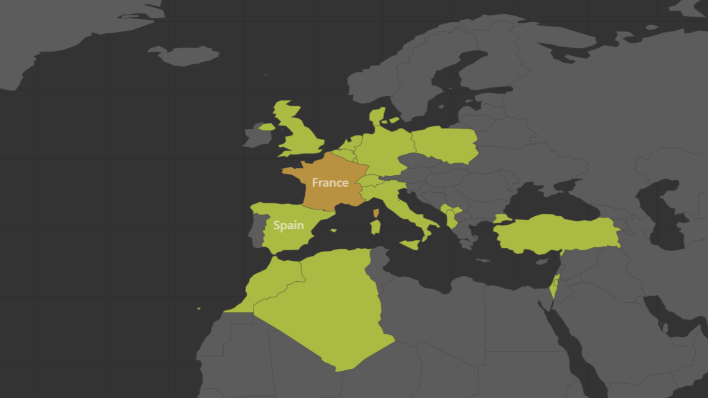

Un profil technique en construction, porté par l'impact humain
J'apprends que la technique n'est qu'un moyen de résoudre des problèmes réels. Mon parcours, qui oscille entre l'apprentissage rigoureux des sciences des données et un engagement associatif intense, m'enseigne que le meilleur algorithme perd de sa valeur s'il n'est pas compris et utile à ses utilisateurs.
Mon Projet Professionnel
💻 Mon ADN : Informatique & Data
Je suis attiré par la construction d'outils, l'automatisation et l'analyse. Mon projet est d'évoluer vers des métiers techniques (Data Engineer, Développeur BI) où je pourrai apprendre à concevoir des solutions logicielles qui transforment la donnée brute en action concrète.
🎯 Les secteurs qui m'animent
Je suis en pleine réflexion sectorielle, cherchant des environnements porteurs de sens pour ma future carrière :
- Le Social & Public : Utiliser la data pour éclairer les politiques d'aide à la décision.
- La Santé : L'analyse de données au service de l'optimisation des parcours et de la prédiction.
- Le Sport (Football) : L'exploitation de la data sportive pour décortiquer la performance.
🚀 Objectif Actuel
Pour confronter mes connaissances théoriques à la réalité du terrain, je recherche un stage de 8 à 10 semaines à partir d'avril 2026. Je suis prêt à m'investir pour apprendre au sein d'une équipe technique.
Évolution Académique
Bachelor Science des Données — Parcours VCOD
IUT de Metz, Université de LorraineL'initiation à l'analyse. Au-delà de l'apprentissage du code (Python, R, SQL) et de la BI, je découvre concrètement la puissance de l'information. Je m'exerce à concevoir des architectures (ETL) et à modéliser des phénomènes pour faciliter la prise de décision stratégique.
En coursBUT Réseaux et Télécommunications
IUT de Châlons-en-ChampagneComprendre l'envers du décor. Cette année m'a donné un premier bagage technique en infrastructures (serveurs, protocoles). Ce parcours me permet aujourd'hui de construire progressivement une vision globale des systèmes d'information.
Baccalauréat STI2D — Option SIN
Lycée Louis Pasteur, Hénin-BeaumontLe déclic informatique. Découverte des Systèmes d'Information. C'est à ce moment que la logique algorithmique est devenue une évidence pour ma poursuite d'études.
Mention Bien — Section Euro AnglaisEngagements & Apprentissage du Leadership
Président
Association ESTIDIANTINE — IUT de MetzDirection de l'association étudiante. Ce rôle m'aide à développer mes soft skills : organisation d'événements, coordination d'équipes et gestion budgétaire. Des compétences transversales précieuses pour mon futur métier.
Président Adjoint
Association ESTIDIANTINE — IUT de MetzRôle pivot dans la transition de gouvernance. J'ai pu y observer l'importance de la coordination d'équipe et la structuration des méthodes de travail collaboratives.
Ambassadeur Jeune
Ville de Méricourt (62) — RCD PalestineMissions d'échange culturel à Jérusalem-Est et accueil de délégations en France. Cette exposition internationale m'apprend l'adaptation face à la nouveauté et l'ouverture d'esprit — des atouts utiles pour comprendre différents besoins métiers.
Animateur BAFA
Centres de loisirsGérer des groupes dynamiques m'a appris une chose essentielle : la pédagogie et l'empathie. C'est cette approche que j'essaie d'adopter aujourd'hui des méthodes de travail axées sur la communication.
Langues & Intérêts
🗣️ Langues
🎯 Centres d'intérêt
Mes Voyages
Une ouverture sur le monde qui forge ma capacité d'adaptation.
